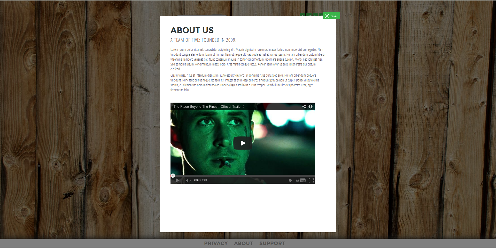

“App Theme” Documentation by “Craig Leontowicz” v1.0
“App Theme”
Created: 2013-11-05
By: Craig Leontowicz
Email: craig.leo@gmail.com
Thank you for purchasing my theme. If you have any questions that are beyond the scope of this help file, please feel free to email via my user page contact form here. Thanks so much!
Table of Contents
- HTML Structure
- CSS Files and Structure
- Javascripts
- Mailer Options (PHP)
- PSD Files
- Sources and Credits
A) HTML Structure - top
This is a fixed-structure theme with many pre-defined backgrounds. It features a main "preview" page (index.html) a "download" page (download.html) as well as modal dialogs loaded by AJAX for support and about pages. This theme also features a basic slider on both pages which will cycle images. As well, a basic e-mail form backed by PHP is provided in two formats.
A-1) Index Page aka "Preview" Page

The "preview" page consists of a left and right side. On the left side, we have a mock iPhone with a picture and below it we have the slider controlers.
The images on the left side for the slider are contained in body > div#container > div#iphone-container starting at line 23.
You may add multiple images inside the iphone-container div, the slider will automatically see the images for you and add the slider buttons automatically. Each image is to be 203px by 305 px to fit inside the iPhone screen nicely.
Now, on the right side for this page we have an "info box" with header text, sub-header text and a form for e-mail sign-ups. To modify the text in the "info box" see lines 40-50 in body > div#container > div#info > div#box > div#inner-box.
The e-mail form posted via AJAX in the background and is linked to mail.php; to configure this script see Mailer Options.
A-2) Download Page

The "download" page is more-or-less identical to the "preview" page in structure and look. The only difference in the two pages is the "info box" which now contains some pre-defined download images to various app stores
You can find these links and images in body > div#container > div#info > div#box > div#inner-box > div#download-icons between lines 47-52.
A-3) Footer
As-is, the footer contains three links (privacy, about & support). Each link's href will tell the modal popup what page to load via AJAX, each link must also contain the class "modal" such as; class="modal"
The modal dialog will popup on-click of a link and load the content of the link you specified. It will also size itself vertically to fit the user's browser the best it can and provide a close button. As well, the HTML files you link to can contain any content you wish (HTML, CSS, JS, Youtube, SoundCloud, forms, etc), whatever you need.
B) CSS Files and Structure - top
There are two internal CSS files and two external CSS files. The first internal CSS file (css/normalize.css) is a generic reset file to uniform styling across different browsers becase many browser interpret the default behavior of html elements differently. By using a general reset CSS file, we can work round this. This file also contains some general styling, such as anchor tag colors, font-sizes, etc. Keep in mind, that these values might be overridden somewhere else in the file.
The second internal CSS file is css/style.css which contains the entire styling for all layout, pages and content of this theme. The file is separated into sections such as"
/** Layout Styling **/ some code for general layout things /** iPhone Styling **/ some code for the iphone styling /** Box Styling **/ some code for the outer "info box" styling /** Inner Box Stlying **/ some code for the inner "info box" styling /** E-Mail Form Styling **/ some code for the email form styling inside "info box" /** Slider Styling **/ some code for the styling of the slider and it's controls /** Footer Styling **/ some code for the styling of the footer and footer links /** Modal Styling **/ some overriding code for the styling of the modal dialogs /** Fading Styling **/ some code used for all the fade effects on images and links etc, etc.
If you would like to edit a specific section of the site, simply find the appropriate label in the CSS file, and then scroll down until you find the appropriate style that needs to be edited.
Any links or images with the class fade will produce a fade effect on this theme when the user mouses over the image or link. The opacity and styling can be changed at the bottom of this CSS file:
a.fade:hover, img.fade:hover {
opacity: 0.7;
}
If you wish to change the background image used to one we have pre-defined, open img/backgrounds. We have 10 pre-defined backgrounds for use; the file Wood02.jpg is the default background currently in use. Pick one you like, then simply open css/stylecss on line 3 you will see:
background: url(../img/backgrounds/Wood02.jpg) no-repeat center center fixed;
Change Wood02.jpg to the background filename of your choice and save the file.
Now, the two external CSS files are loaded from Google Fonts. One is Montserrat; this is the default font used for all content and headers. The second font is Open Sans Condenced which is used for the sub-headers, small legal print, etc because of it's thin-base profile letters.
C) JavaScript - top
This theme imports three Javascript files.
- jQuery
- Theme Scripts
- Modal jQuery Plugin
jQuery is a Javascript library that greatly reduces the amount of code that you must write and this is a required file which is loaded by Google's CDN.
The Theme Script handles all of the iPhone slider animations/functions, modal dialog pop-up options and mail form options.
Lines 2-64handles the iPhone slider. There are no options for this slider, but if you are comfortable with jQuery you can modify it to your liking.Lines 66-79handles the modal dialog options. If you wish to change these options please refer to the plugin author's website.Lines 81-88handles the mail form. There are no Javascript options for this mailer unless you are comforable with jQuery you may modify the code.
D) Mailer Options - top
The mailer script (mail.php) has two mailing options.
Option one is with the use of Swiftmailer. Swiftmailer is a powerful mailing library for PHP which can use a SMTP server and credentials to send out e-mails. This is the recommended way by this theme to send the form data because it ensures a proper delivery that shouldn't end up in your junk folder.
Option two is with the use of PHP's mail() function. This is a very basic function that works on most hosting providers but it is subject to your host's preferences; meaning e-mails are not guaranteed to be delievered and may be delivered off-time.
The default is Swiftmailer. To use PHP's mail() function see line 11 of mail.php
$mailer_option = 'swiftmailer'; // or 'php-mailer'
Simply change the word swiftmailer to php-mailer. Please refer to the below sections depending on which option you picked.
Option One: Swiftmailer Setup
You will need your SMTP host, username, password and port. If you do not know these, its best to contact your hosting provider and get the information. If you know the information edit lines 14-20
$smtp_host = 'mail.yourdomain.com'; // Your SMTP host domain
$smtp_port = 25; // Your SMTP host port
$smtp_user = 'you@yourdomain.com'; // Your e-mail account to send from
$smtp_pass = 'your-password'; // Your e-mail account password to send from
$to_email = 'send-to@me.com'; // The e-mail to send the message to.
$website = '[Website]'; // Your website's name
Simply replace the values above with the correct information then refer to line 46
$message_to_user = 'Thank you for signing up!';
This is the message the user will see pop-up after using the form. Simply replace it with any message you wish and save the file. You're done!
Option Two: PHP mail() Setup
Simple refer to lines 40-41 and set the e-mail address you wish to receive the e-mail at and your website's name.
$to_email = 'send-to@me.com'; // The e-mail to send the message to.
$website = '[Website]'; // Your website's name
Replace the values with what you wish to use. When this is complete then refer to line 42
$message_to_user = 'Thank you for signing up!';
This is the message the user will see pop-up after using the form. Simply replace it with any message you wish and save the file. Save the file and you're done!
E) PSD Files - top
I've included one layed PSD for this theme:
- psd/theme.psd
All images, layouts (preview page, download page, etc), buttons and icons are located in this one layed PSD.
F) Sources and Credits - top
I've used the following images, icons or other files as listed.
- Background Images » BoomBoomPixel.com
- App Store Icons » Respective Companies (Apple, Blackberry, Android, Microsoft)
- iPhone Mockup » Pixeden.com
- All other media is subject to myself, Craig Leontowicz
Once again, thank you so much for purchasing this theme. As I said at the beginning, I'd be glad to help you if you have any questions relating to this theme. No guarantees, but I'll do my best to assist. If you have a more general question relating to the themes on ThemeForest, you might consider visiting the forums and asking your question in the "Item Discussion" section.
Craig Leontowicz